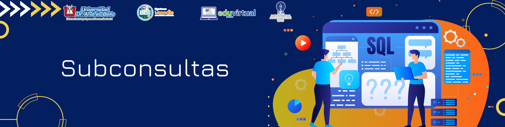

Operadores, funciones generales y funciones de agregación para consultas SQL
5. Subconsultas
Contenido
Una subconsulta es una declaración SQL que tiene otra consulta SQL incrustada en la cláusula WHERE o HAVING. La sintaxis de una subconsulta en SQL cuando el subquery o subconsulta forma parte de la condición WHERE es la siguiente:
SELECT "column_name1"
FROM "table_name1"
WHERE "column_name2" [Operador de Comparación]
(SELECT "column_name3"
FROM "table_name2"
WHERE "condición");Donde [Operador de comparación] podría ser operadores de igualdad como =,>, <,> =, <=. También puede ser un operador de texto como "LIKE". La parte entre paréntesis se considera como la "consulta interna, subconsulta o subquery", mientras que la parte que no está entre paréntesis se considera como la "consulta externa".
Ejemplo:
Para efectos de visualizar resultados más complejos en la consulta se usará la Base de datos Northwind cuyo script esta proporcionado en el aula virtual. Específicamente se utilizará para este ejemplo la tabla Products y la tabla Categories de la base de datos. Para comenzar, se sugiere hacer una consulta simple de ambas tablas.
select * from Products La consulta devuelve 77 registros
select * from Categories La consulta devuelve 8 registros
Para usar una subconsulta para encontrar los productos de las categorías Beverages, usamos la siguiente declaración SQL:
SELECT ProductID, ProductName, CategoryID
FROM Products
WHERE CategoryID in (SELECT CategoryID FROM Categories where CategoryName='Beverages')De esta manera se está haciendo referencia a dos tablas pero a partir de una subconsulta.
Obra publicada con Licencia Creative Commons Reconocimiento Compartir igual 4.0